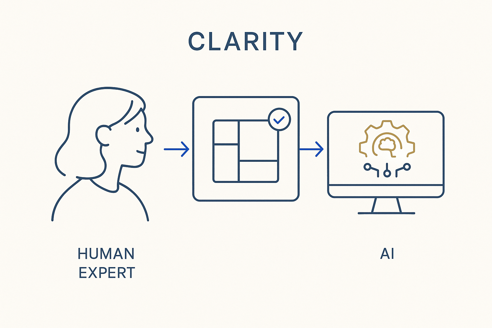

Make the structure understandable on both sides — a model, a diagram, a decision that a domain expert and a machine can each read without a translator.

> Make the structure understandable on both sides — a model, a diagram, a decision that a domain expert and a machine can each read without a translator.
Clarity is what makes everything else usable. The abstract thinkers can build something correct and unreadable at the same time — a model only they can follow. That is not a model of the business; it is a private artifact. Clarity is the discipline of making the work land for the people who have to check it and act on it: plain language, sharp definitions, one idea named clearly rather than five ideas blurred together.
It is a two-audience test. The same structure has to be readable by a domain expert — visual, in their words — and by a machine — structured markdown, YAML, rules. If either side needs a translator, clarity has failed. The good news is that structure is what makes both possible from one source: say it once, clearly, and render it in the register each reader needs.
Sharpen how you communicate, not just what you model. A clear model invites correction; a murky one hides its own mistakes.
Where it lives: the attitude layer of Breakthrough Modeling — understandable on both sides of the table.